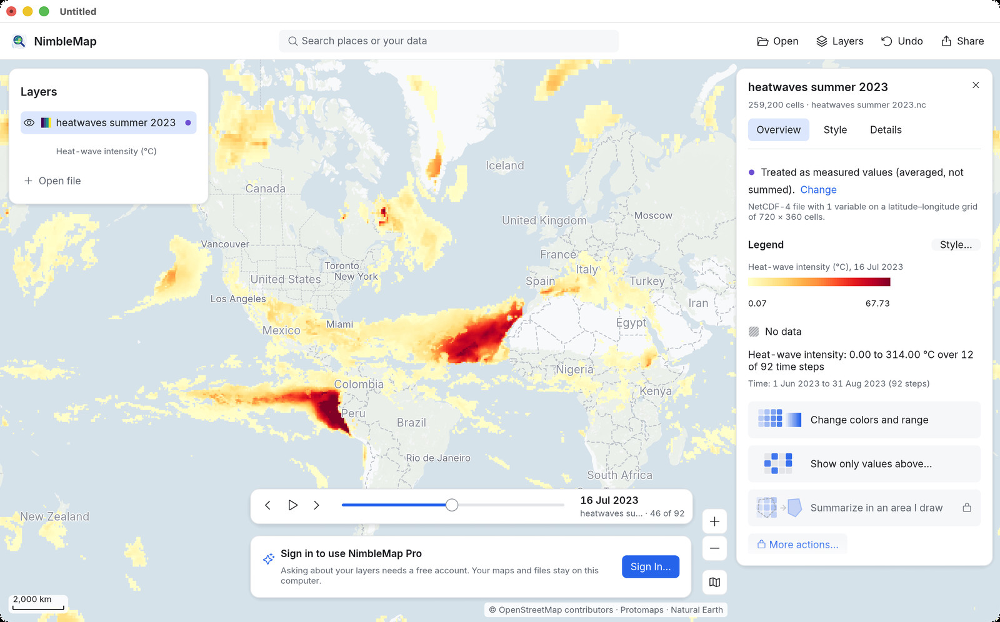
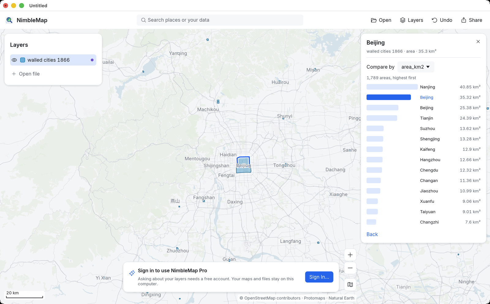
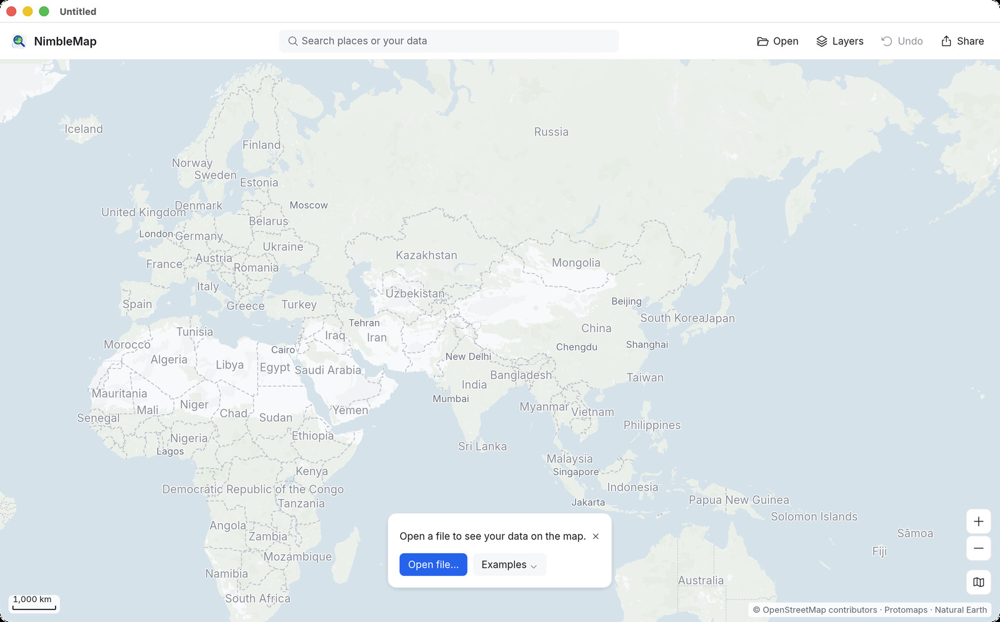

Help
Begin met een verhaal, niet met een gereedschapskist
Elk stappenplan hieronder gebruikt een voorbeeld dat bij de app hoort, zodat u meteen kunt meedoen. Elke stap noemt de knoppen precies zoals de app ze noemt.

Tyfoons: de zwaarste stormen
Open 4.999 stormbanen, zoek Haiyan op, zie hoe hij zich verhoudt tot de rest en houd alleen de stormen van categorie 5 over.

De hittegolf van 2023 door de tijd
Speel een zomer aan dagelijkse klimaatgegevens af met de tijdbalk, lees losse cellen af en exporteer een kant-en-klare kaartafbeelding.

Ommuurde steden in China, 1866
Leg stadsmuren op satellietbeelden, rangschik ze op grootte, filter op provinciehoofdsteden en deel het resultaat.
Het venster in één minuut

- Knoppenbalk (boven): het zoekvak Search places or your data (Zoek plaatsen of uw gegevens), dan Open (Openen, ⌘O), Layers (Lagen, ⌘L), Undo (Ongedaan maken, ⌘Z) en Share (Delen, ⌘E).
- Lagenpaneel (links): alles wat u hebt geopend. Het oog toont of verbergt een kaartlaag; sleep om de volgorde te wijzigen; klik met de rechtermuisknop voor meer.
- Infokaart (rechts): verschijnt als u ergens op klikt. Hij toont de feiten, hoe het ding zich verhoudt tot de rest, en maximaal drie voorgestelde knoppen. De infokaart van een kaartlaag heeft de tabbladen Overview (Overzicht), Style (Stijl) en Details (Details).
- Kaartknoppen (rechtsonder): Zoom in (Inzoomen), Zoom out (Uitzoomen) en de knop voor de achtergrondkaart. De schaalbalk staat linksonder.
- Alles ongedaan maken: elke wijziging, van een kleur tot een filter tot het verwijderen van een kaartlaag, is één stap van Undo. Uw bestanden worden nooit gewijzigd.
Uw eigen bestanden openen
Sleep bestanden naar NimbleMap of gebruik Open. NimbleMap leest CSV en Excel (met kolommen voor breedte- en lengtegraad), GeoJSON, Shapefile, GeoPackage, KML/KMZ, GPX, GeoTIFF en NetCDF. Als de app iets moest aannemen, zoals welke kolommen de coördinaten zijn, zegt de infokaart dat in één regel, met Change (Wijzigen) ernaast. Punten die u uit Amap, Tencent of Baidu Maps hebt gekopieerd, kunt u naar GPS-coördinaten verplaatsen; zie GCJ-02.
Woorden die u niet kent?
De woordenlijst legt kaartwoorden uit in gewoon Nederlands en zegt waar u elk woord in de app tegenkomt.
NimbleMap bijwerken
NimbleMap zoekt bij het openen naar een nieuwe versie, en wanneer u NimbleMap › Zoek naar updates… kiest. Is er een, dan verschijnt rechtsonder op de kaart een kleine melding. Klik op Nu bijwerken: NimbleMap downloadt de nieuwe versie, controleert de digitale handtekening en de controlesom, vervangt zichzelf en opent opnieuw. Hebt u niet-opgeslagen wijzigingen, dan vraagt NimbleMap dat eerst. U hoeft niet naar de website.
De kaarten worden met de app bijgewerkt. De voorbeeldkaarten en de ingebouwde wereldlagen zitten in NimbleMap en worden dus met de app bijgewerkt. De online achtergrondkaart is altijd actueel.
Kan NimbleMap zichzelf niet vervangen, bijvoorbeeld omdat het rechtstreeks vanaf de schijfkopie draait of uw account de map Apps niet mag wijzigen, dan opent het de nieuwe versie in de Finder: sleep NimbleMap naar Apps. Versie 0.7.1 en ouder hebben nog geen ‘Nu bijwerken’: download de nieuwe versie één keer via de downloadpagina.
Privacy. De controle leest één klein bestand van nimblemap.com, of van de kopie op GitCode, en verstuurt niets over u: geen identificatie, alleen het versienummer van de app. Met Weergave › Offline werken aan zoekt NimbleMap niet.
Feedback
Feedback versturen: Help › Feedback versturen… in de app, of via GitHub Discussions.
Privacy
Feedback vanuit de app. Als u Help › Feedback versturen… kiest, stuurt NimbleMap wat u schrijft naar onze feedbackdienst, die het openbaar plaatst op GitHub Discussions (github.com/kangning-huang/NimbleMap/discussions), waar iedereen het kan lezen en erop kan reageren. Het bericht bevat uw tekst, uw titel als u er een hebt opgegeven, het soort feedback en de taal van de interface. Het bevat de versienummers van de app en van macOS alleen als u App-versie en macOS-versie meesturen aangevinkt laat. Het bevat nooit uw e-mailadres, uw naam, uw account, uw kaarten of uw bestanden. U hebt geen GitHub-account nodig.
Als u een e-mailadres opgeeft, wordt het vertrouwelijk op onze server bewaard naast de link naar uw bericht, alleen zodat wij u kunnen antwoorden. Het wordt nooit openbaar getoond. Wij verwijderen het zodra het gesprek is afgerond, en uiterlijk na een jaar; schrijf ons als u het eerder verwijderd wilt hebben.
Als u bent aangemeld, staat in het bericht alleen dat het van een aangemelde gebruiker komt, en bewaart onze server de ID van uw account vertrouwelijk naast de link naar uw bericht, zodat wij kunnen opvolgen. Die wordt nooit openbaar getoond; wij verwijderen hem zodra het gesprek is afgerond, en uiterlijk na een jaar.
Om spam te voorkomen stuurt de app een willekeurig installatienummer dat op uw computer is aangemaakt, en ziet onze server uw netwerkadres. Beide worden alleen als onomkeerbare hash met sleutel bewaard om te tellen, en na een week verwijderd.